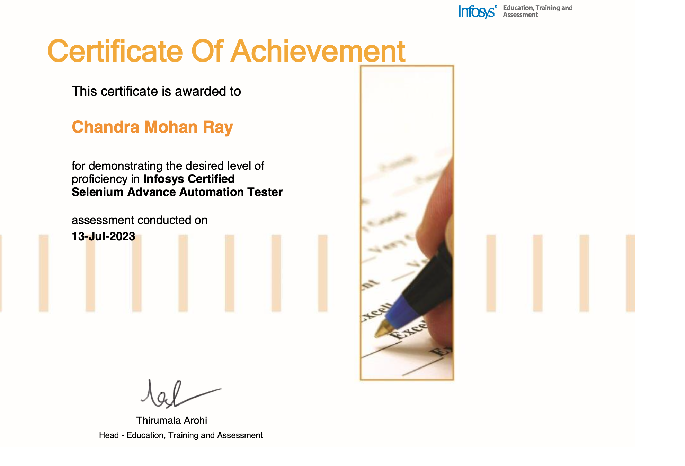
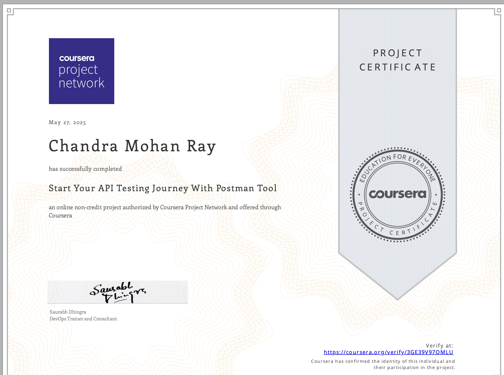
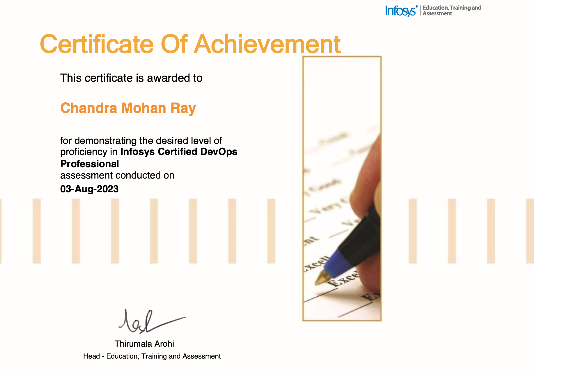

About Me
I’m Chandra Mohan Ray, a Quality Engineer / SDET with 3.8 years of experience in software testing, test automation, and quality assurance. I specialize in building end-to-end automation solutions across web, mobile, and API platforms using Selenium, Playwright, Appium, Java, JavaScript, SQL, and MongoDB.
I actively leverage AI-powered tools like GitHub Copilot, Google Gemini, Anthropic Claude, and ChatGPT to write cleaner, more reliable automation scripts, reduce debugging time, and boost productivity. My expertise spans CI/CD pipeline automation, defect management, and Agile/ITIL practices, helping teams deliver faster, defect-free releases.
Passionate about problem-solving and continuous learning, I enjoy working on challenging projects, exploring emerging technologies, and creating robust systems that enhance user experience.
My Skills
AI Tools
GitHub Copilot, Gemini, Claude, GPT-5, DeepSeek
Automation Tools
Selenium, Playwright, Appium
Frameworks
TestNg, Junit, BDD
Languages
Java, JavaScript, TypeScript
Project Management
Jira, GitLab, Jenkins, TestRail, Xray
API Automation
Postman, REST API, RestAssured, Playwright Default
IDEs
Vscode, Eclipse, Intelij
DB Automation Testing
SQL, MongoDB, Database Testing
Testing Domains
Web & Mobile Automation, Regression Testing, Functional Testing, Unit Testing, UAT, Sanity Testing, Smoke Testing
Experience
Test Engineer | Xoriant | Client: Frontdoor
Developed and maintained end-to-end automation with Playwright and TypeScript.
Senior System Associate | Infosys | Client: Telenet
Developed automation scripts to create tools, resulting in a 50% reduction in implementation time.
Senior System Associate | Infosys | Client: Proximus
Developed automation scripts using Playwright, Selenium, and Java, reducing time and labor costs by 80%.
Certifications
SELENIUM
Java SE8

API
AWS ASSOCIATE

DEV-OPS
CPQ DEVELOPER